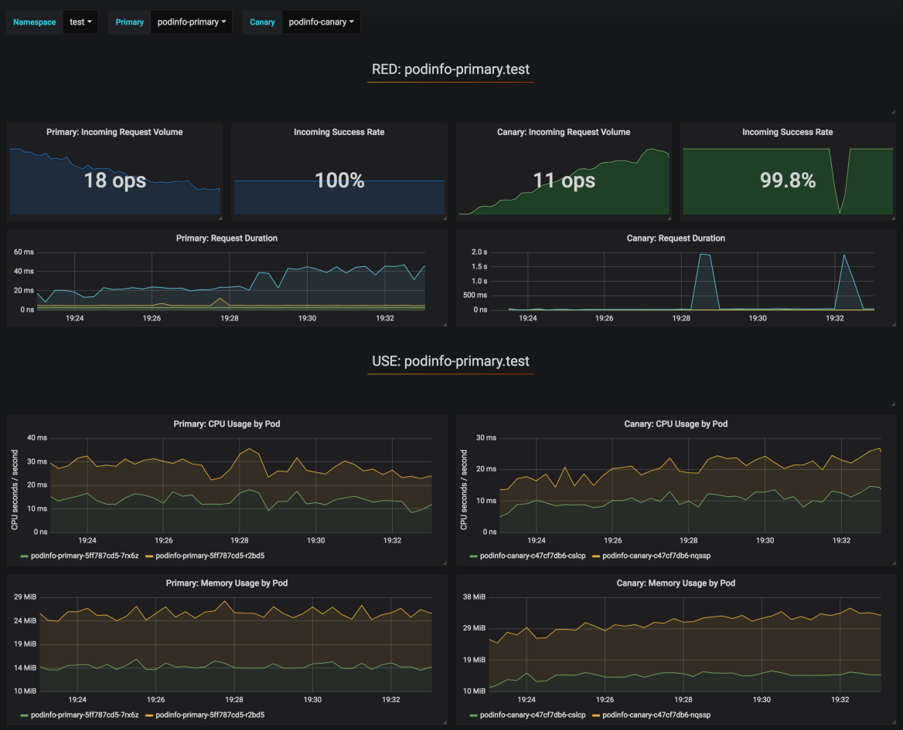

Kubernetes 中的渐进式交付：蓝绿部署和金丝雀部署
渐进式交付是持续交付的下一步， 它将新版本部署到用户的一个子集，并在将其滚动到全部用户之前对其正确性和性能进行评估， 如果不匹配某些关键指标，则进行回滚。
这里有一些有趣的项目，使得渐进式交付在 Kubernetes 中变得更简单。 我将使用一个 Jenkins X 示例项目 对它们之中的三个进行讨论：Shipper、Istio 以及 Flagger。
Shipper
shipper 是来自 booking.com 的一个项目， 它对 Kubernetes 进行了扩展，添加了复杂的部署策略和多集群编排（文档）。 它支持从一个集群到多个集群的部署，允许多区域部署。
Shipper 通过一个 shipperctl 命令行进行安装。 它增加不同集群的配置文件来进行管理。 请注意这个与 GKE 上下文相关的问题。
Shipper 使用 Helm 包来部署，但是它们没有随着 Helm 一起安装，它们不会在 helm list 的输出显示。 同样地，deployments 的版本必须是 apps/v1 ， 否则 shipper 将不能编辑 deployment 来添加正确的标签和副本数量。
使用 shipper 部署都是与从旧版本(现有版本)过渡到新版本(竞争版本)相关。 这是通过创建一个新的应用对象实现的， 它定义了部署需要通过的多个阶段。例如下面 3 个步骤过程： 1. Staging：部署新版本到一个 pod ，没有流量 2. 50 / 50：部署新版本到 50% 的 pods，50% 的流量 3. Full on：部署新版本到全部的 pods，全部的流量
strategy:
steps:
- name: staging
capacity:
contender: 1
incumbent: 100
traffic:
contender: 0
incumbent: 100
- name: 50/50
capacity:
contender: 50
incumbent: 50
traffic:
contender: 50
incumbent: 50
- name: full on
capacity:
contender: 100
incumbent: 0
traffic:
contender: 100
incumbent: 0
如果发布的某个步骤没有将流量发送到 pods ， 则可以使用 kubectl port-forward 访问它们，如：kubectl port-forward mypod 8080:8080， 这对于在用户看到新版本之前进行测试非常有用。
Shipper 支持多集群的概念，但是以相同的方式对待所有集群，仅使用区域并通过 capabilities （配置在集群对象中）进行筛选， 所有对一个应用对象来说，这里没有一个 dev, staging, prod 集群的选项。 但是我们可以有两个应用对象： - myapp-staging 部署到 “staging” 区域 - myapp 部署到其它区域
在 GKE 中，你可以轻松地配置多集群 ingress ， 该入口将公开在多个集群中运行的服务，并从离你所在位置最近的集群提供服务。
局限性
Shipper 中的主要的局限性有： - Chart 限制：Chart 必须有一个部署对象。 Deployment 的名称必须使用 {{.Release.Name}} 模板化。 Deployment 对象应该有 apiVersion：apps/v1 。 - 基于 Pod 的流量切换：这里没有细粒度的流量路由，例如：发送 1% 的流量到新版本，它基于正在运行的 Pod 数量。 - 如果 Shipper 不工作了，新的 Pod 将获取不到流量。
Istio
Istio 不是一个部署工具，而是一个服务网格。 然而，它很令人感兴趣，因为它已经变得非常流行，并且允许流量管理，例如，将一定比例的流量发送到不同的服务和其他高级网络。
在 GKE 中，只需在集群配置中选中复选框即可启用 Istio 。 在其它集群中，可以通过 Helm 手动安装。
有了 Istio ，我们可以创建一个网关，通过 Ingress 网关处理所有外部流量，并创建虚拟服务来管理到我们服务的路由。 为此，只需找到 ingress 网关的 ip 地址并为其配置通配符 DNS 。 然后创建一个网关，通过 Ingress 网关路由所有外部流量。
apiVersion: networking.istio.io/v1alpha3
kind: Gateway
metadata:
name: public-gateway
namespace: istio-system
spec:
selector:
istio: ingressgateway
servers:
- port:
number: 80
name: http
protocol: HTTP
hosts:
- "*"
Isito 不管理应用的生命周期，只管理网络。 我们可以创建一个虚拟服务，为所有进入 ingress 网关的请求 向 pull request 或 master 分支中部署的服务发送 1% 的流量。
apiVersion: networking.istio.io/v1alpha3
kind: VirtualService
metadata:
name: croc-hunter-jenkinsx
namespace: jx-production
spec:
gateways:
- public-gateway.istio-system.svc.cluster.local
- mesh
hosts:
- croc-hunter.istio.example.org
http:
- route:
- destination:
host: croc-hunter-jenkinsx.jx-production.svc.cluster.local
port:
number: 80
weight: 99
- destination:
host: croc-hunter-jenkinsx.jx-staging.svc.cluster.local
port:
number: 80
weight: 1
Flagger
Flagger 是一个由 Weaveworks 赞助的使用了 Istio 的项目， 该项目使用 Prometheus 的指标进行自动化金丝雀发布和回滚。 它超越了 Isito 提供了基于指标的自动化渐进式发布和回滚。
Flager 需要将 Istio与 Prometheus、Servicegraph 和某些系统的配置一起安装， 另外还要安装 Flager 控制器本身。 它也提供了一个 Grfana 面板来监控部署进度。

部署 rollout 通过 Canary 对象定义， 它会生成主要的和金丝雀 Deployment 对象。 编辑 Deployment 时，例如要使用新的镜像版本， Flagger 控制器将负载从 0% 切换到 50% ，每分钟增加 10% ，然后它将切换到新的 deployment 或者如果响应错误和请求持续时间等指标失败则进行回滚。
比较
此表总结了 Shipper 和 Flagger 在几个渐进式交付特性方面的优势和劣势。
| Shipper | Flagger | |
|---|---|---|
| 流量路由 | k8s 原生的按 Pods 的百分比进行均衡 | 基于 Istio 的高级流量路由（请求的百分比） |
| 部署进度 UI | 无 | Grafana 面板 |
| 支持的 Deployments | 具有较强限制的 Helm charts | 任何 Deployment |
| 多集群部署 | 是 | 否 |
| 在不同命名空间（如 jx-staging 和 jx-production ）的金丝雀部署或蓝绿部署 | 否 | 否，但是要做到它可以手动编辑虚拟服务 |
| 在不同集群的金丝雀部署或蓝绿部署 | 是，但是有点极客，使用一个新应用并将它链接到新区域 | 也许可以使用 Istio 多集群? |
| 自动部署 | 否，操作者必须手动完成这些步骤 | 是，每分钟增加 10% 的流量，可配置的 |
| 自动回滚 | 否，操作者必须发现错误并手动完成这些步骤 | 是，基于 Prometheus 指标 |
| 必需品 | 无 | Istio，Prometheus |
| 告警 | Slack |
综上所述，我看到了 Shipper 在多集群管理和简单性方面的价值，它不需要 Kubernetes 以外的任何东西，但是它有一些严重的局限性。
Flager 确实在自动部署和回滚以及对流量进行细粒度控制的过程中付出了额外的努力，它以更高的复杂性成本提供了所需的所有额外服务（ Isito、Prometheus ）。